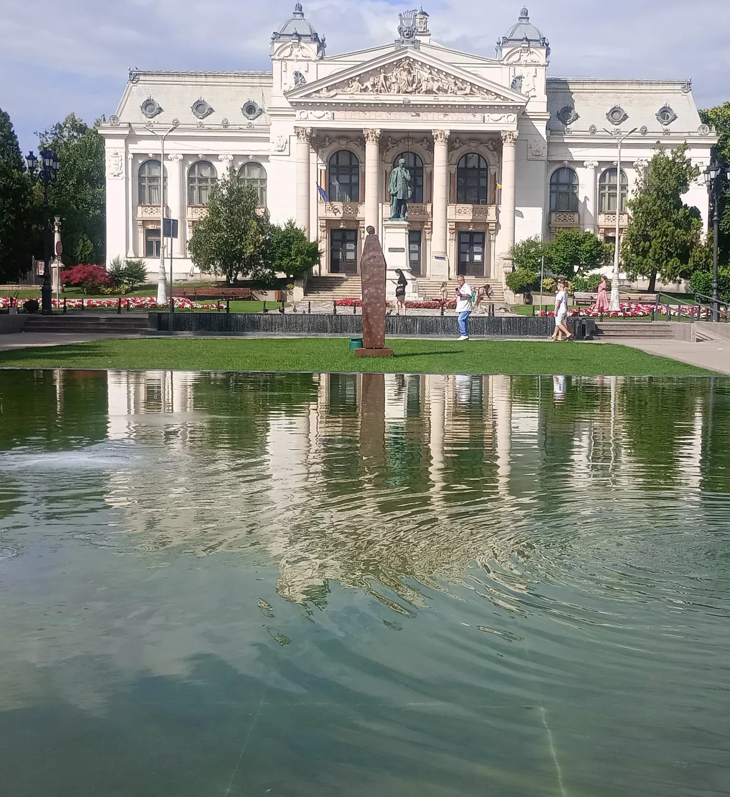
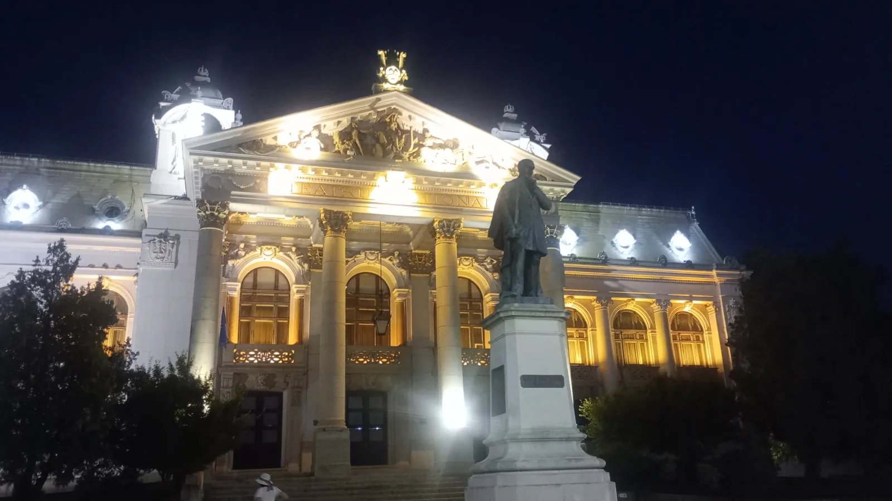

E cel mai vechi teatru național din România — și, poate, cel mai frumos. O clădire care pare desprinsă dintr-o capitală imperială, cu coloane, statui și un fronton sculptat, ridicată anume pentru ca Iașul să aibă o scenă pe măsura marilor orașe ale Europei.
It is Romania's oldest national theatre — and perhaps its most beautiful. A building that seems lifted from an imperial capital, with columns, statues and a carved pediment, raised so that Iași could have a stage worthy of Europe's great cities.
Istoria clădiriiThe building's storyO bijuterie a arhitecților vienezi
A jewel by the Viennese architects
Clădirea a fost ridicată între 1894 și 1896, pe locul vechii primării, după planurile vestiților arhitecți vienezi Fellner și Helmer — cei care au proiectat teatre asemănătoare la Viena, Praga, Odessa și în multe alte orașe ale Europei. A fost inaugurată pe 1 decembrie 1896 de primarul Nicolae Gane, cu spectacole din piese de Alecsandri, Negruzzi și Millo. Este considerat primul teatru național românesc și cea mai veche clădire de acest fel din țară.
The building was raised between 1894 and 1896, on the site of the old town hall, to the plans of the famous Viennese architects Fellner and Helmer — the same who designed similar theatres in Vienna, Prague, Odessa and many other European cities. It was inaugurated on 1 December 1896 by mayor Nicolae Gane, with plays by Alecsandri, Negruzzi and Millo. It is considered Romania's first national theatre and the oldest building of its kind in the country.

Aur, cristal și marmură
Gold, crystal and marble
Sala, cu circa o mie de locuri, e ornamentată bogat în stil baroc și rococo, cu holuri de marmură colorată, statui și aurituri. E luminată de 1418 becuri și de un candelabru impresionant, cu 109 becuri de cristal de Veneția, comandat special de la Berlin. Acustica e considerată una dintre cele mai bune din țară.
The hall, seating around a thousand, is richly ornamented in Baroque and Rococo style, with halls of coloured marble, statues and gilding. It is lit by 1,418 bulbs and by an impressive chandelier with 109 Venetian crystal bulbs, specially ordered from Berlin. Its acoustics are considered among the finest in the country.
Cortina și plafonulCurtain and ceilingPictura care spune o poveste
Painting that tells a story
Cortina pictată e opera maestrului vienez Maximilian Lenz — o alegorie a vieții, cu cele trei vârste în centru și, în dreapta, simbolul Unirii Principatelor Române. Plafonul e semnat de pictorul austriac Alexander Goltz: alegorii în culori pastel, cu nimfe și îngeri, încadrate în stucaturi rococo.
The painted curtain is the work of the Viennese master Maximilian Lenz — an allegory of life, with the three ages at its centre and, on the right, the symbol of the Union of the Romanian Principalities. The ceiling is signed by the Austrian painter Alexander Goltz: pastel allegories with nymphs and angels, framed in Rococo stucco.

O sală în care marmura, aurul și cristalul par să aștepte, în fiecare seară, ridicarea cortinei.
A hall where marble, gold and crystal seem to wait, every evening, for the curtain to rise.
De ce „Vasile Alecsandri"
Why "Vasile Alecsandri"
În 1956, cu prilejul a 140 de ani de la primul spectacol în limba română, teatrul ieșean a primit numele marelui poet și dramaturg Vasile Alecsandri (1821–1890) — unul dintre cei care au pus bazele teatrului românesc.
In 1956, on the 140th anniversary of the first Romanian-language performance, the Iași theatre received the name of the great poet and playwright Vasile Alecsandri (1821–1890) — one of the founders of Romanian theatre.